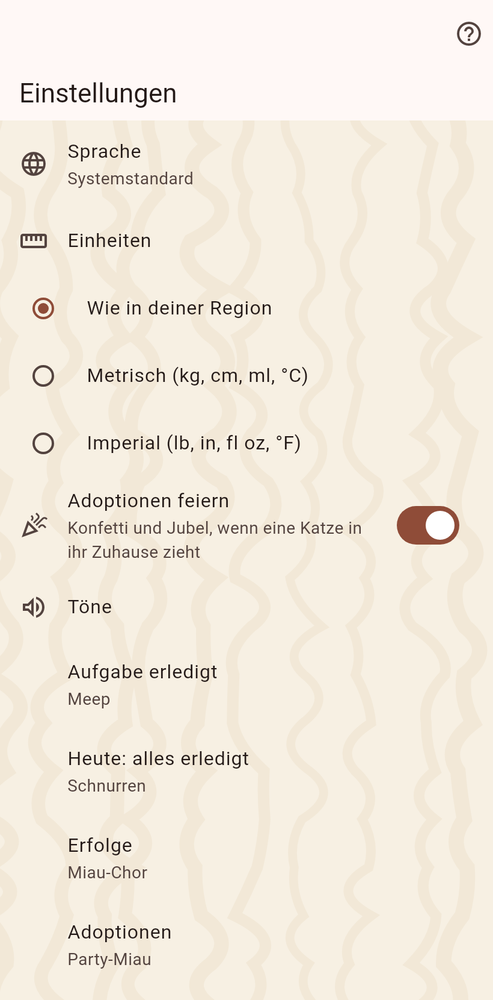

Die Einstellungen der App, gemeinsam für jeden Katalog: Sprache, Einheiten, Feiern und Töne, das Fell hinter den Seiten, Benachrichtigungen, und wo die Kataloge gesichert sind. Die Touren lassen sich von hier wiederholen.

Ein Katalog ist eine Welt für sich. Die Katalogseite listet jeden auf diesem Gerät; ein Tipp wechselt zu ihm, das Plus legt einen neuen an, das Zahnrad öffnet seine Einstellungen: Name, Katzen oder Tiere, Felder, Autoren und Sperren, Archiv, Zurückgehen, "aus einem anderen Katalog hereinholen", Löschen. Löschen schreibt den Katalog zuerst in eine Datei.
Der Code, den Partner neben deinem Namen sehen; er bleibt beim Katalog, zu dem er gehört.